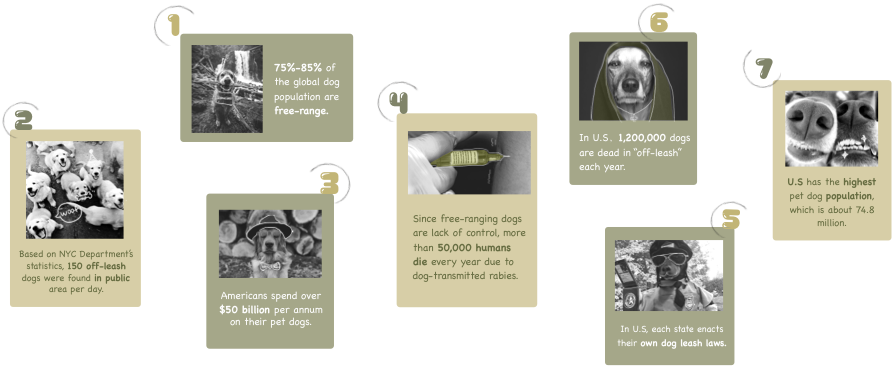

Doglas Dog-leash
Why you need a "Doglas"?
Dogs always hold a special place in the hearts of their human companions. From pets to sporting companions to service dogs, “man’s best friends” add a measurable degree of value to the worlds of the humans they share their lives with. Behind those joy, it’s also very common for unleashed pet dogs in public areas, which causes various safety and health issues. To satisfy the both needs of the public and owners, we introduces a multifunctional dog leash to resolve the public’s worries, meanwhile, help owners to have a hassle-free dog walking.
Founds
Although the global families widely treat dogs as domesticated pets, the majority of the world’s dogs are free-range. Especially numerous pet dogs are still “off-leash” in public area, which resulted in various health issues between human and dogs.
What are owners thinking during pet walking?
“A quicker pace” not only makes it possible to work-out with the dog, but also reduces dog’s inappropriate behaviors by giving it less chance to notice new things, which could result in pulling.